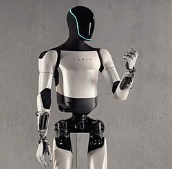

Tesla Bot (Optimus)
Tesla Bot, también conocido como Optimus, es un proyecto de robot humanoide en desarrollo por Tesla, Inc. Se anunció en el evento del Día de la Inteligencia Artificial (IA) de la compañía el 19 de agosto de 2021. Elon Musk, presidente de Tesla, afirmó durante el evento que Tesla probablemente construiría un prototipo en 2022. Musk ha dicho que cree que Optimus "tiene el potencial de ser más significativo que el negocio de vehículos con el tiempo". Se planea que Tesla Bot mida 5 pies 8 pulgadas (173 cm) de alto y pese 125 libras (57 kg). Según la presentación realizada durante el primer evento del Día de la IA, un Tesla Bot será "controlado por el mismo sistema de IA que Tesla está desarrollando para el avanzado sistema de asistencia al conductor utilizado en sus automóviles" y tendrá una capacidad de carga de 45 lb (20 kg). Las tareas propuestas para el producto son las que son "peligrosas, repetitivas y aburridas", como proporcionar asistencia de fabricación.